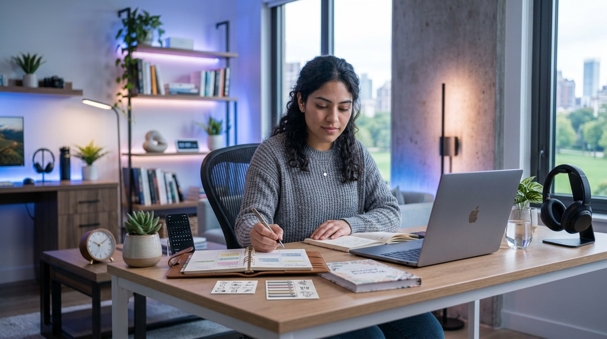

MÓDULO 2
Rutina digital saludable
Una rutina digital saludable permite organizar mejor el tiempo de estudio, descanso y entretenimiento, evitando distracciones innecesarias.

🗓️ Quiz: construye una rutina digital saludable
Responde las siguientes preguntas para conocer qué tan saludable es tu rutina diaria con la tecnología.
1. ¿Qué haces cuando necesitas estudiar?
2. ¿Qué es recomendable hacer después de pasar bastante tiempo frente a una pantalla?
3. ¿Cómo puedes mantener una rutina digital equilibrada?
Responde las tres preguntas para conocer tu resultado.